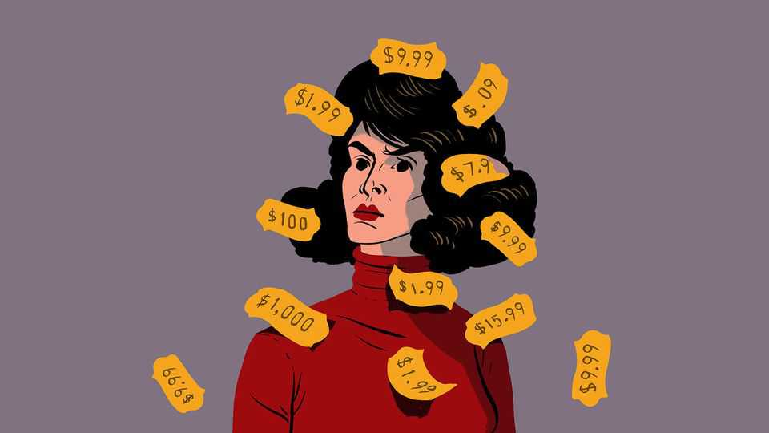

The panic over personalised pricing is overdone
Lawmakers are getting ahead of themselves

Nov 12th 2026
One of the great promises of artificial intelligence is personalisation. The ability to crunch vast amounts of data and generate tailored content at scale raises all sorts of possibilities: individualised lesson plans for pupils in a classroom, treatments geared to the needs of specific patients, financial advice for a person rather than a persona. But in one area in particular, personalisation looks poisonous.
Legislators in America and beyond are queuing up against personalised pricing, the idea of charging people different prices for the same product based on what firms know about them personally. The states of Maryland, Connecticut and New Jersey have all passed laws this year restricting the practice. New York already requires the use of personalised pricing to be disclosed; a more draconian law is awaiting the signature of Kathy Hochul, the state’s governor. On October 28th the Federal Trade Commission ordered some of the country’s best-known firms, including Delta, Uber and Walmart, to hand over information as part of an investigation into personalised pricing. Regulators across the Atlantic are also swarming around the topic.
This is both unsurprising and misguided. It is unsurprising because the public hates the idea. Dynamic pricing, the practice of varying the price of things like airline seats or ride-hailing fares over time in response to demand, is controversial enough. Personalised pricing, which means you might pay more than someone else who is buying an identical product at the same time, sounds even more galling. When people are asked how they feel about this possibility, they give it a big thumbs-down. Given the march of AI and widespread concerns over “affordability”, it’s no great shock that policymakers are rushing to curtail the practice.
That doesn’t make them right to do so. In the proper circumstances, personalised pricing is perfectly acceptable to people. If you make bids on an auction site like eBay or negotiate a deal on behalf of your company, you are reaching a price based on your own willingness to pay. If you take part in a loyalty programme, you actively want your previous behaviour to affect prices. Entire industries depend on risk-based pricing that reflects information about individuals: the laws in Connecticut and New York, for example, have exemptions for insurers and lenders.
Personalised pricing would make products cheaper for some. In a paper published in 2022, Jean-Pierre Dubé and Sanjog Misra of the University of Chicago conducted an experiment with ZipRecruiter, a jobs marketplace, to see how differential pricing plays out. They found that adjusting prices based on employers’ willingness to pay yielded both higher profits overall for ZipRecruiter and lower prices for a majority of its subscribers. In June Colorado’s governor, Jared Polis, vetoed a state law on personalised pricing for fear that it would make life less affordable for most consumers.
Competition increases the likelihood that consumers would be better off in a world of individualised pricing. In an earlier paper, Mr Dubé and his colleagues looked at what happened when two Chinese cinemas started to offer discounts to consumers based on their smartphone location data. Each chain had an incentive to offer deeper discounts when people were closer to a rival chain, encouraging the other to respond with defensive price cuts of their own.
There are good reasons to worry about personalised pricing. Without robust privacy rules, firms will be tempted to use consumers’ personal data without their consent. There is a real benefit to having reference prices; if every price were tailored to individuals, customers might never be sure whether they were getting a good deal. But these concerns, combined with consumers’ instinctive aversion to the idea, is also reason to think that lots of firms will tread carefully.
Amazon suffered a public backlash way back in 2000, when some DVD buyers were aggrieved to find that they were being charged a different price for the same title. The firm pledged then not to use customer demographics to set prices. In September John Furner, the boss of Walmart, made the same promise in an open letter. “We price the product, not the person,” he wrote. The crackdown on personalised pricing is understandable. But it risks hurting lower-income shoppers and piling on compliance costs in order to prevent something that may not materialise. That’s a bad deal. ■
Step inside the world of work with our Bartleby newsletter. Each week our white-collar oracle muses on the agonies of office life.